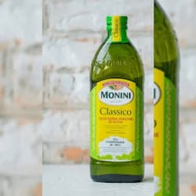
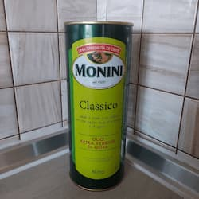
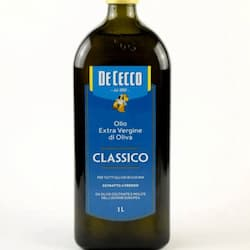
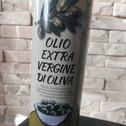
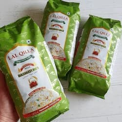

ОЛІЯ ТА ІНШЕ
-

Оливкова олія Monini Classico (Італія)
Оливкова олія першого холодного віджиму Monini Classico
Об`єм: 1 л
Ціна: 380 грн -

Оливкова олія Monini Extra Vergine Classico
Олія оливкова Monini - класичний смак оливкового масла. Масло Моніні можна легко розпізнати завдяки його збалансованому гармонійному смаку та інтенсивному, багатогранному аромату
Об`єм: 1 л
Ціна: 150 грн -
Оливкова олія De Cecco Extra Vergine Classico (Греція)
Оливкова олія De Cecco Extra Vergine Classico - олія першого холодного віджиму, висока якість якого визначається його золотавим кольором із зеленим відливом
Об`єм: 1 л
Ціна: 150 грн -

Оливкова олія De Cecco Classico Extra Virgin (Італія)
Оливкова олія De Cecco Classico Extra Virgin, нерафінована
Об`єм: 1 л
Ціна: 330 грн -

Оливкова олія Olio extra vergine di oliva
Olio extra vergine di oliva - оливкова олія першого холодного віджиму. Має золотистий колір із зеленуватим відливом і чистий запах оливок з відтінком трав'яних тонів, а так само пікантний смак. Дуже корисна і смачна оливкова олія
Об`єм: 1 л
Ціна: 150 грн -

Рис "басматі" (подвійна пропарка)
Рис "басматі" вирощується біля підніжжя Гімалаїв на півночі Індії та районах Пакистану, що межують із нею. Цей сорт справедливо визнається в усьому світі королем рису. Басматі має приємний аромат і вишуканий смак. Його зерна довші та тонші від звичайного довгозерного рису, а під час варіння вони ще більше подовжуються, залишаючись майже незмінними в ширину. Рис "басматі" придатний для практично будь-якої страви східної кухні та просто чудовий у пловах і гарнірів. Для цього сорту рису найбільш підходить метод варіння "під кришкою" або "на парі"
Вага: 1 кг
Ціна: 150 грн